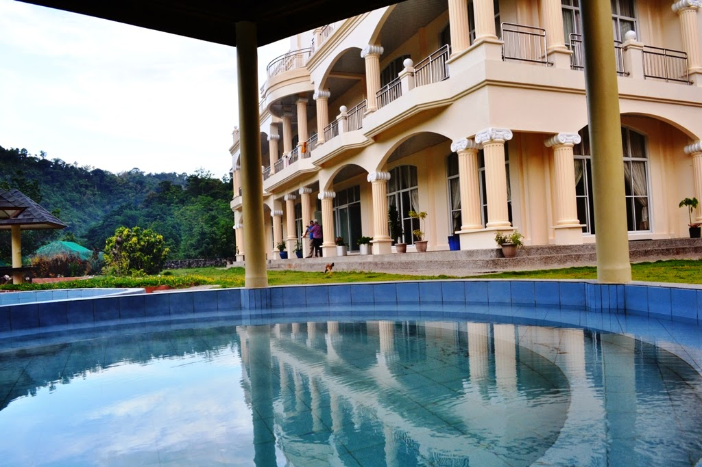

Pooten Splash is a relaxing resort located along Asin Road, near Baguio City. It is perfect for families and groups who want to enjoy cool mountain weather and refreshing water activities.
The place offers swimming pools, cottages, and open spaces surrounded by nature. Visitors can enjoy a peaceful environment while spending quality time with friends and family.